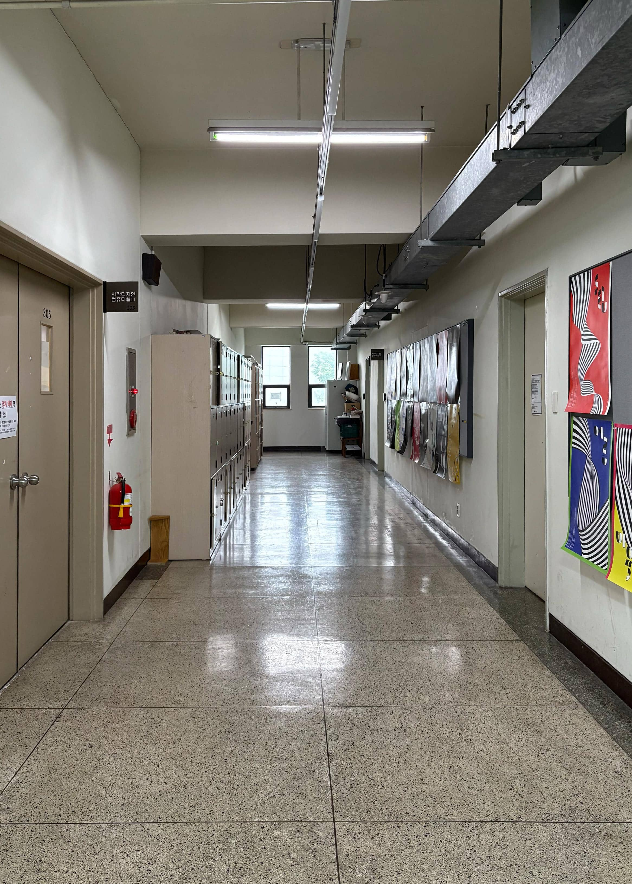
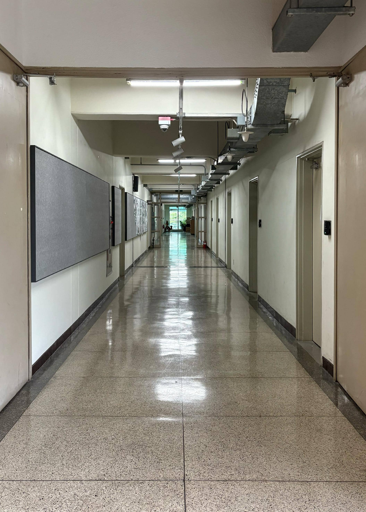
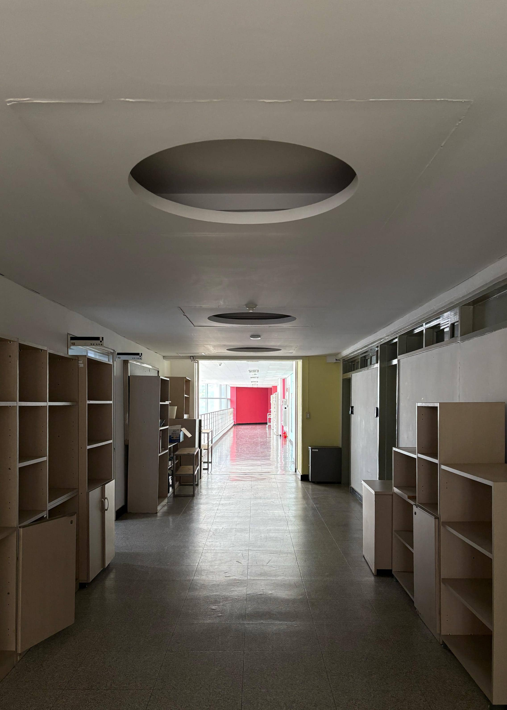
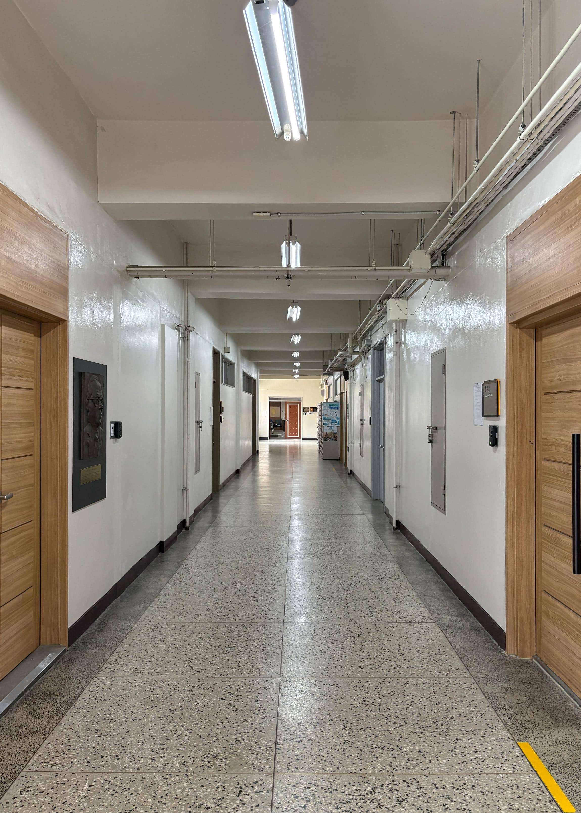

정의
복도: 건축물 내부 또는 외부에서, 건물과 건물, 방과 방 사이를 연결하는 지붕이 있는 통로
방이나 천장을 제외한, 이동할 수 있는 모든 통로 공간을 복도로 볼 수 있음

디자인관 3층 2025.05.21. 16:16p.m.

디자인관 2층 2025.05.21. 16:18p.m.

건축관 2층 2025.05.23. 12:38p.m.

화공관 1층 2025.05.23. 12:54p.m.
돌아가기